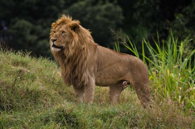

_by_Китоно.jpg)
Царь зверей
С давних пор одна огромная кошка внушала человечеству уважение и покорила его фантазию. Речь, конечно, идет о льве. Человек всегда почитал льва и наделял его самыми лучшими человеческими качествами благородством, храбростью, верностью мощью непобедимого бойца. Древние египтяне сделали льва эмблемой (знаком) божественной власти и царского достоинства. Ассирийцы и греки видели во львах спутников богинь. В раннехристианском искусстве лев символизировал даже самого Христа. Позже львы украшали гербы многих монархов и вельмож.
Так почему же лев владыка зверей? Без сомнения потому, что вид у него действительно царственный. Воображение в первую очередь рисует льва в расцвете сил. Его несрaвненная темно-золотая или черно-коричневая грива придает ему величие монарха. И голос льва не менее внушителен, чем его вид. В тихую ночь львиный рев вызывает трепет у всех, кто его слышит - даже на расстоянии в восемь километров. В своем поведении лев также проявляет немало королевских качеств. Он величественно добродушен и общителен - кроме тех случаев, когда оберегает свою добычу или подругу.
Львы отличаются от остальных кошек тем, что живут группами - так называемыми прайдами. В обычный прайд входят два-три самца, несколько львиц с детенышами и вожак. Львиный предводитель не всегда самйы крупный или самый сильный член прайда, но остальные самцы признают его, а он, в свою очередь, терпит их присутствие. Численность прайда колеблется от четырех-пяти членов до тридцати-сорока.
Среди крупных кошек со львом по величине соперничает только тигр. Обычно лев бывает длиной немногим меньше трех метров и весит от 180 до 230 килограммов. Львицы мельче: их средняя длина составляет два с половиной метра, а вес - 140 килограммов. Среди кошек только у львов легко отличить самца от самки. У львиц отсутствует грива. Лев обладает огромной физической мощью. Одним ударом лапы он валит с ног трехсот килограммовую зебру. Несмотря на солидный вес, этот хищник превосходный прыгун. Один очевидец утверждал, что лев на его глазах перемахнул через ущелье шириной в 11 метров. Трехметровый прыжок в высоту для льва вообще обычное дело.
Некогда львы кроме Африки водились в Европе, на Ближнем и Среднем Востоке, а также в Индии. Но постепенно из-за развития животноводства, а потом и промышленности львы были оттеснены человеком. Теперь они обитают в Африке южнее Сахары и в Индии. Правда, в Индии они остались только в заказнике Гарский лес. Лев в отношениях с человеком всегда был склонен к мирному сосуществова нию. Правда, бывали случаи, когда хищники становились людоедами. Так, в начале века два льва утащили в съели 28 рабочих со строитель ства железной дороги Момбаса-Найроби. После этого их подстерег и застрелил инженер, руководивший строительством.
Некоторые зоологи сомневаются в хваленом благородстве льва. Ведь львы часто посылают на охоту самок, а потом объедаются добытой ими пищей. Это, однако, можно объяснить тем, что лев из-за своей гривы очень приметен и может легко спугнуть добычу. Поэтому за добычей львы посылают менее заметных самок.
Состарившихся и больных львов прайд не защищает, а, наоборот, изгоняет. Одряхлевший лев, тощий и слабый, часто становится добычей гиен. Бесславный конец для владыки зверей.
